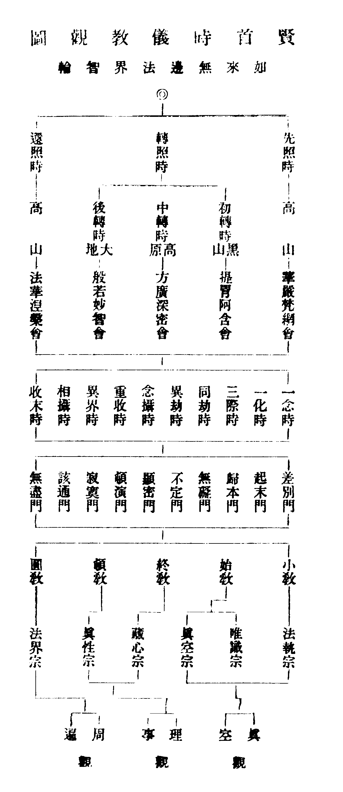
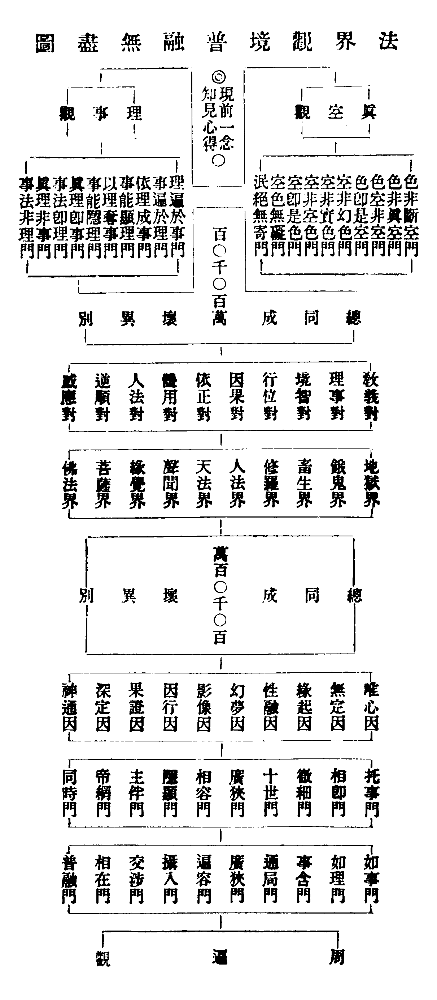

須彌
(唐言妙高山王也)。
卍新纂大日本續藏經 第58冊
No.1024 賢首五教儀 (6卷)
【清 續法集錄】
第 1 卷
天台賢首。隨宜示法。說天台賢首法者。不自知也。後人起念便隔作兩截。重天台失天台。重賢首失賢首矣。執相泥名。分河立幟。此末法大弊。通人宜無所揀擇軒輊於其間也。賢首宗闕五教儀。百亭法師為補綴成之。以毒攻毒。以楔出楔。且憑楮墨施平等。莫向眉端安是非。殆不獨為賢首宗之功臣矣。東南義虎。略見一斑。為兩宗左右袒者。即勿寓目焉可也。
康熈庚申立秋日順天府府丞錢唐戴京曾題
華嚴稱根本法輪。不唯為開漸之本。亦且為攝末之本。竺乾震旦。咸最尊尚。諸佛歷祖。遞代師承。自龍樹依之判二種般若。天親依之闡六相圓融杜順依之而演三觀。雲華依之而開十玄。至賢首大師。則依此而立宗判教。離台家之四以為五。復得清涼憲章。啟十門而會性相二教。圭峯祖述。敘五義而揀空性兩宗。此皆神明天縱。博贍旁通。故能各騁辯才。宏敷妙趣。或造論。或釋經。法界宗旨。燦然明備。而一大時教。已罄無遺蘊矣。厥後繼圭峯而起者。雖代有哲人。而兼綜條貫。洵蔑以加。莫能更讚一詞。乃味者不察。讀一不讀一。廢目而任耳。伐異以黨同。或譏其伏斷皆無。或指為教觀兩失。在台衡從上諸師。或慮兩家末裔。濫以賢首之旨。混入己宗。故弗惜曉曉。而貶駮過當。何意曾玄輩。遂拾牙瀋。逞狂盲。妄肆詆訶。橫起攻擊。不至飲水分河不止。噫。疇復知固有大謬不然者哉。先師寶輪大師。博極諸宗。尤於華嚴。宿有緣契。精研深入。心領神會。嘗痛賢首未墜之緒。僅爾如綫。誓願振興絕業。以繼往開來。闡法後。力宏此宗。五教十玄。蓋無時無處。不高提圓唱也。著五教解誚論。論賢首宗未知圓義解二篇。大旨謂賢首大師之離四以為五。非悖天台。實備天台之所未備。清凉紹隆之。即天台以清涼大師為大元勳。亦匪為過。中間晳兩家之殊塗若鏡懸。會兩家之同歸若璧合。且分銖不爽。纖累無偏。則又若衡平。向使悻悻者見此。應無從置喙矣。先師謂天台當以清涼大師為大元勳。(立)亦謂先師實天台元勳。不徒稱清涼嫡裔也。(立)侍師有年。徒以脫臼也晚。塵封智錮。致望海驚心。入山空手。而慈雲百兄法師。抱頴悟絕倫之資。親承提命。往還咨決。遂得髓於言下。然深藏若良賈。年來杜門却埽。單與淨滿晨夕娛遊。禪觀之餘。則取是宗教部。及諸祖著述。研磨對會。博觀約取。先則支分條列。而派析之。後則徹委窮源。而滙聚之。錄成一書。首分時。次敘儀。次立教。又次判宗。終以明觀。時則有先後通別。儀有本末顯密。教有始終頓圓。宗有小大性相。觀則有方便。有因緣。有對法。有觀門。有六相。有十玄。言簡義詳。理融旨顯。信解行證。了然眉列。讀之而猶謂之有教無觀。得乎。猶謂之伏斷修證俱無指示。得乎。今而後法界宗旨。將不終屈抑也已。然則是書也。法師固不負為先師嫡子。溯而上之。將為圭峰。為清涼。為賢首。以至龍樹諸大師之元勳。亦併無歉於天台。彼悻悻尋賢首隙者。蓋無容置喙。而平心以觀可矣。乃命名曰賢首五教儀。法師自謂。竊比於高麗師。稟玄義而錄出四教儀云爾。夫誰曰不然。茲將校梓。屬(立)弁端。(立)甚喜華嚴根本法輪。儼揭天日也。遂合掌讚歎。不顧鄙陋而為之辭如此。
梅塢興福教院法弟 真立和南 撰
孔子不可無思孟老子不可無莊周釋尊不可無慶喜為道之須傳也南嶽不可無智者戒賢不可無玄奘達摩不可無慧可為教之須人也又智者不可無章安玄奘不可無慈恩慧可不可無僧璨為其授受有源而不竭奕葉相承而無盡也迨於賢首大師何獨不然以言乎師則有杜順雲華開其先以言乎資則有清凉圭峰紹其後其立教也有始有終有頓有圓斷則斷其厚薄證則正其淺深位則品其高下行則定其遠近顯法相若然燭之朗明揀機益比析薪之分剖其判宗也有小有大有性有相相則妄相為相空則真空亦空頓則無所不絕似影離於天日圓則無所不融如像含於海空其分時也有先有後有別有通非先無以知其為開漸之頓非後無以知其為攝末之本非別無以見說法之次第非通無以見教理之圓融其敘儀也有本有末有顯有密非本無以了一乘之頓實非末無以識三乘之權漸非顯無以決擇其一定非密無以測度其不定其明觀也有方便有因緣有對法有觀門有六相有十玄非方便無以辯修證非因緣無以明德用非對法無以解無盡非觀門無以入法界非六相無以顯圓通非十玄無以彰無礙何者凡夫見色為實色見空為斷空故開真空絕相門使之觀色非實色舉體是真空觀空非斷空舉體是幻色如是於理則見矣於事猶未也復開理事無礙門使觀不可分之理皆圓攝於一塵本分限之事亦通遍於法界如是以理望事則可矣以事望事猶未也又開周遍含容門使觀全事之理隨事而一一可見全理之事隨理而一一可融然後一多無礙大小相含則隱顯施為神用不測矣教觀既周時儀已備則判釋諸佛說法儀式至矣盡矣無復加矣以此自修無法不通以此教他無機不被是以三帝歸崇兩朝悅服李長者論讚於前崔學士傳美於後至於海內海外莫不揚其化天上天下靡不仰其徽質諸千古以上之聖賢而無訛俟諸百世以下之俊傑而不惑遂令法門隆盛代有哲人長水流布於東吳蒼山崛起於西蜀雲捿敷演於南海交光發明於北嶺猗歟休哉奈何今義學家不得其門而入見其教部廣大意旨幽深即如賢首大師著述凡有一百餘卷清涼國師現流傳者約有四百餘卷圭峰大師疏註總有九十餘卷浮狂者詆為葛藤愚鈍者視為砂石誰復能探其微窺其奧哉幸我乳峰得水大師自弘法以來朝夕提撕時為演唱特未布諸方策普令一切見聞耳(續法)雖忝輪下性極顓蒙晝夜參隨日漸薰熟竊謂此皆賢家所傳心法若不傳於後葉在己則有悋法之愆在他安得正眼之益爰將先師常所樂說者錄之復尋諸大部中所切要者集之十餘年間考閱再三窮思至四始成六卷名之曰五教儀庶得華嚴宗旨彌播於塵寰法界心印重光於昔日燈燈相續化化無窮矣謹述顛末冀見此衷至於知我罪我所不暇計焉。
古杭慈雲灌頂行者 續法 題
No. 1024-D
賢首時儀教觀圖

法界觀境普融無盡圖

賢首大師。判釋如來一代時教。不出右圖三觀。初祖杜順。集成五教。二祖雲華。草創儀等。四祖清涼。添足宗等。五祖圭峯加揀。今圖標三祖賢首一師者。蓋教觀由三祖而圓備。宗儀由三祖而建興。述作功德。推尊獨在。故不舉餘祖耳。後之學法者。務知開宗立教之主。餘祖自該顯矣。
雲山灌頂行者續法識
賢首五教儀條箇
卷第一
序 時教圖 法界觀圖
別三時
先照 轉照 還照
問答三時名義
通三時
一念時 一化時(華嚴 阿含 方廣 般若 法華 涅槃 通妨)
卷第二
三際時 同類時 異類時
念攝時 重収時 異界時
攝入時 収末時
通恒說妨 通涅槃妨 通諸教妨
通相遍妨 通餘佛妨 通諸教妨
十儀
本末差別 依本起末 攝末歸本
本末無礙 隨機不定 顯密同時
一時頓演 寂寞無言 該通三際
重重無盡
五教名義
五教所詮
小教十門 相十門空五門
始教十門 對相空十五門
頓教十門 圓教十門
五教斷證
小教諦障 小教行位 小教辟支佛果
小教佛果
卷第三
始教執障 始教斷證 終教斷證
頓教斷證 圓教斷證
五教機益
小教機益 始教機益 終教機益
頓教機益 圓教機益
五教通妨
五教妨難 釋名義妨 釋分判妨
立五所以 所以會通 會通諸教
會通相収 五教相収
卷第四
六宗
法執 後五宗 揀性相濫
揀空性濫 揀空相性 揀空性相
揀性相空 揀始頓濫 揀終同濫
揀同別濫 總申開合 別通妨難
三觀方便
外緣內障 發大心 受佛戒
修勝行 明心鏡
卷第五
揀觀智 止觀性緣 止觀入住
止觀漸頓 止觀均齊 止觀緣境 魔名
魔境 治魔覺悟 治魔識責
治魔止觀 治魔經呪 治魔正念 病相
治病 顯果善根 顯果辨偽
顯果長養 顯果證境
三觀十對
教義 理事 境智 行位
因果 依正
卷第六
體用 人法 逆順 感應
圓融無盡
真空觀(四句十門) 無礙觀(理遍事十門)
周遍觀
十觀 十玄相 十玄事
十玄喻次 十玄開立 十玄圓融
十因心法 十因緣起 十因緣性
十因法性
修觀益
揀修
教觀依持 結指
賢首五教儀條箇(終)
No. 1024
賢首五教儀卷第一
言三時者有別有通。
華嚴云或日初分時入或日中分時入或日後分時入法華謂初善中善後善是也。
第一日出先照時者。
△華嚴經云譬如日出先照須彌山等諸大高山如來應正等覺亦復如是成就無邊法界智輪常放無礙智慧光明先照菩薩摩訶薩等諸大山王。
△若約所說教相者。
△無一眾生而不具有如來智慧但以妄想執著而不證得我欲教以聖道令其永離妄想於自身中得見如來廣大智慧如我無異。
△即於三七日中遂為此等眾生於菩提場稱於大方廣法界敷演萬行因華以嚴本性令成萬德佛果。
△此一時中為圓頓大根眾生轉無上根本法輪名為直顯教令彼同教一乘人等轉同成別所謂初善或日初分時入也。
△故法華方便偈云我始坐道場時即自思惟若但讚佛乘眾生沒在苦不能信是法破法不信故信解偈云爾時長者處師子座眷屬圍繞諸人侍衛出內財產注記券疏窮子見父馳走而去即勅使者追捉將來窮子驚喚迷悶躃地。
第二日昇轉照時者中有二義先總後別。
△先總明者華嚴經云但以山地有高下故照有先後如來智輪亦復如是隨諸眾生根欲不同智慧光明種種有異楞伽亦云日出光等照下中上眾生如來照世間為分部諸法。
△若約所說教相者。
△經云除先修習學小乘者著相憍慢不信法者及溺貪愛水著於五欲者深入諸邪見生死險道者如是等眾生諸根悉暗鈍著樂癡所盲云何而可度。
△我於三七日思惟如是事若我遇眾生盡教以佛道彼即沒苦海毀謗不信故疾入於惡道若以小乘化乃至於一人我則墮慳貪此事為不可進退難為遂。
△尋念過去佛所行方便力始知過去佛皆以三乘引然後令悟入究竟一佛乘故我所得道亦應說三乘作是思惟時十方佛皆現梵音慰喻我善哉釋迦文第一之導師得是無上法隨一切諸佛而用方便力我聞慰喻音隨順諸佛意始往波羅奈轉四諦法輪讚示涅槃法度陳如五人漸漸諸處乃至千萬亦為求緣覺者說十二因緣亦為求大乘者說六波羅蜜中間為說方廣般若諸甚深法淘汰如上聲聞緣覺引進權乘諸小菩薩。
△此一時中為下中上三類眾生轉依本起末法輪名為方便教令彼三類人等轉三成一所謂中善或日中分時入也。
△故法華方便偈云復作如是念我出濁惡世如諸佛所說我亦隨順行以方便力故為五比丘說為諸眾生類分別說三乘雖復說三乘但為教菩薩。
初轉時者華嚴云次照黑山如來智輪次照聲聞緣覺謂佛初於鹿苑為鈍根下類眾生轉小乘法輪說一切諸法皆因緣生以破外道自然性等又說緣生無我翻彼外道實有我執此一轉時唯就境明實有依他然猶未說大乘法空真如妙理由是名之為隱實教令彼凡夫外道轉凡成聖也。
故法華云長者知子愚癡狹劣即以方便更遣餘人眇目矬陋無威德者汝可語之云當相顧除諸糞穢倍與汝價窮子聞之歡喜隨來為除糞穢淨諸房舍。
中轉時者華嚴云次照高原如來智輪次照決定善根眾生隨其心器示廣大智謂佛次於中時為中根一類眾生轉三乘法輪說一切諸法皆唯識現以破小乘心外有法從因緣生又說緣生假有翻彼小乘實有法執。
此一轉時始約心說盡空遍計然猶未說一乘真空法性妙理由是名之為引攝教令彼二乘人等轉小成大也故法華云長者有智漸令入出經二十年執作家事其所說經即方廣深密等也。
後轉時者華嚴云然後普照一切大地如來智輪然後普照一切眾生乃至邪定亦皆普及為作未來利益因緣令成熟故謂佛又於後時為利根上類眾生轉一乘法輪說一切諸法本如來藏妙真如性以破權乘不了心境俱空無性又說緣生即空翻彼權乘二無我執此一轉時直據性顯中歸圓成然猶未說一乘佛性生佛平等究竟真常實相妙理由是名之為融通教令彼三乘人等轉權成實也故法華云爾時長者自知不久示其金銀真珠玻瓈諸物出入皆使令知。
其所說經即般若妙智等也。
第三日沒還照時者此乃義取出現經意說云如日沒時還照高山如來智輪最後還照菩薩摩訶薩等諸大山王。
十定品云譬如日天子周行照曜晝夜不住日出名晝日沒名夜菩薩亦復如是。
法界品云譬如日輪無有晝夜但出時名晝沒時名夜菩薩智輪亦復如是無有分別但隨心現教化眾生。
△經云過四十餘年漸漸見其根熟即中下機成上上品如是之人我今亦令得聞是經入於佛慧遂於靈鷲山中告大眾云世尊法久後要當說真實汝等應當一心信解無有餘乘唯一佛乘開示悟入佛之知見普皆與授阿耨多羅三藐三菩提記顯示三五乘性眾生法身平等入一乘道乃至臨欲滅度之時在於拘尸那城娑羅雙樹間作大師子吼顯常住法決定說言一切眾生皆有佛性凡是有心定當作佛究竟涅槃常樂我淨皆令安住祕密藏中即與華嚴海會師子頻申大眾頓證無有別異。
△此一時中為上上根眾生轉攝末歸本法輪名為開會教令彼偏教五乘人等轉偏成圓所謂後善或日後分時入也。
△故法華方便偈云我見佛子等志求佛道者我即作是念如來所以出為說佛慧故今正是其時正直捨方便但說無上道教化諸菩薩無聲聞弟子信解偈云父知子心漸已曠大即聚親族說是我子凡我所有舍宅人民悉以付之恣其所用子念昔貧今於父所大獲珍寶甚大歡喜。
問準上判釋則三時名義非憑一經論耶。
△答開有二義。
△一取經意葢日初出先照高山日若垂沒亦應還照諸山王故如彼天台亦開平地為三以成五(食時禺中正午三也加幽谷高山以對五味五也)取幽谷為二而合四(晉華嚴云譬如日出先照諸大山王次照一切大山次照金剛寶山然後普照一切大地四也而云為二合四者如妙玄云猶如日出先照高山次照幽谷後照平地故合四照成三照也)故疏鈔云我佛本為一事出現於世四十餘年未顯真實今分一代時教豈妨判有前後分析權實空有取捨偏圓漸頓方知佛法微妙深玄譬猶不泛大海豈識邊涯不諳木石安知真寶故智論釋法施云依隨經論廣作義理為立名字皆名法施。
△二約教理華嚴依本起末故有潛流而無後照法華涅槃攝末歸本故有會流而無先照今雙取之本末無礙先後圓足非本無以垂末故華嚴中影顯法華涅槃日出潛流義云譬如日出先照須彌山等諸大高山又如大海其水潛流四天下地及八十億諸小洲中非末無以歸本故涅槃法華中影顯華嚴日沒會流義云如閻浮提日入之時眾生不見以黑山障故而是日性實無沒入眾生不見生沒入想聲聞弟子亦復如是為諸煩惱山所障故不見我身以不見故便於如來生滅度想而我實不畢竟永滅又如日天子能除諸暗此經亦復如是能破一切不善之暗譬如四河出阿耨達池若有天人諸佛說言是河不入大海當還本源無有是處菩提之心亦復如是有佛性者若聞不聞若修不修悉皆應得阿耨菩提又加一切川流江河諸水之中海為第一此經亦復如是於諸經中最為深大若不爾者則日唯有出無沒入故普照地後諸大高山不得還照益故過中照已應如昏暮世間皆暗瞑故何以經云今復轉最妙無上大法輪亦還令汝得聞是經入於佛慧又百川中無海潛流從何本源出故穿鑿求者終不能得益故江河乾時後應無水入中流故何以經云於一佛乘分別說三譬如從牛出乳從乳出酪。
△但經論中成有名無義或有義無名或名義俱全或名義皆闕今於前三句中復開六句而料揀之一少分名二全分名三少分義四全分義五少分名義六全分名義。
△少分名者如華嚴十定品云日出名晝日沒名夜涅槃初卷云聖慧日明從今永滅無上法船於斯沉沒。
△全分名者如本起經云菩薩處胎時晨朝為色界諸天說法日中欲界日晡鬼神華嚴十定品云或日初分或日中分或日後分。
△少分義者如華嚴五十世界初成喻云譬如三千世界初始成時先色天次欲天次人處及餘眾生如來出現先化菩薩次化二乘後及餘諸眾生。
五十一法界出生喻云譬如法界常出一切聲聞獨覺菩薩解脫而法界無增減如來智慧恒出一切世出世間種種智慧而如來智無增減皆明先頓後漸義也。
四十七云或時為說差別三乘或時為說圓滿一乘普皆濟度令出生死此明先漸後頓義也五十四輪依起喻云譬如樹林依地輪地依水輪水依風輪風依空輪空無所依一切佛法依慈悲慈悲復依方便方便依四大智智依無礙慧慧無所依五十一四寶出生喻云譬如大海有四寶珠具無量德能生海內一切珍寶如來大智慧海於中有四大智寶珠具足無量福智功德由此能生一切眾生聲聞獨覺學無學位及諸菩薩智慧之寶此皆依本起末義也五十二文字攝入喻云譬如書字普入一切事一切語一切算數一切世間出世間處而無所住如來音聲普入一切處一切眾生一切法一切業一切報中而無所住一切眾生種種語言皆悉不離如來法輪何以故言音實相即法輪故諸河入海喻云一切智慧無量無邊不可思議佛子此閻浮提有二千五百河流入大海西拘耶尼有五千河流入大海東弗婆提有七千五百河流入大海北鬱單越有一萬河流入大海佛子此四天下如是二萬五千河相續不絕流入大海此皆攝末歸本義也。
法華藥草喻品末云因緣開示是我方便今為汝等說最實事是先權後實也化城喻中東方諸梵請云唯願度脫開涅槃道東南諸梵請云唯願轉法輪顯示諸法相南方諸梵請云願轉無上法輪上方諸梵請云願示大涅槃道是先半後滿也智勝威音之說先三後一也鑿井髻珠之譬先小後大也。
乃至王膳顯實也良醫開權也涅槃三云譬如阿耨達池出四大河如來亦爾出一切命起末也八云譬如眾流皆歸於海一切契經皆歸大乘大涅槃經歸本也五云譬如長者唯有一子以愛念故晝夜殷勤教其半字而不教誨毗伽羅論何以故以其幼稚力未堪故子既長大堪任讀學時彼長者教半字已次為演說毗伽羅論如來亦爾以諸聲聞無有慧力是故如來為說半字九部經典而不為說毗伽羅論方等大乘若諸聲聞有堪任力我亦爾時為諸弟子說於半字九部經已次為演說毗伽羅論大乘經典所謂如來常存不變先半後滿也。
七云譬如女人生育一子嬰孩得病是女愁惱求覓醫師醫師既來合三種藥酥乳石蜜與之令服因告女人且莫與乳須藥消已爾乃與之是時女人即以苦物用塗其乳藥至消已母人以水淨洗其乳喚其子言來與汝乳是兒聞已漸漸還飲如來亦爾為度一切教諸眾生修無我法為修空故說言諸法悉無有我如是修空永斷我心入涅槃已我於爾時說如來藏是故比丘不應生怖應自分別如來祕藏不得不有先權後實也。
△全分義者華嚴五十一龍王降雨喻云譬如阿那婆達多龍王興大密雲徧閻浮提普霔甘雨百穀苗稼皆得生長江河泉池一切盈滿如來亦爾興大悲雲遍十方界普雨無上甘露法雨令一切眾生皆生歡喜增長善法滿足諸乘又如摩那斯龍王將欲降雨先起大雲彌覆虗空凝停七日待諸眾生作務究竟過七日已降微細雨普潤大地如來亦爾將降法雨先興法雲成熟眾生為欲令其心無驚怖待其熟已然後普降甘露法雨演說甚深微妙善法漸令滿足一切智智無上法味。
婆達降雨華嚴也摩那興雲轉照三教漸成熟也後降法雨法華涅槃也又海寶飲縮喻云譬如大海有四熾然光明大寶布在其底性極猛熱常能飲縮百川所注無量大水一日藏大寶光明照觸海水悉變為乳二離潤大寶光明照觸其乳悉變為酪三火燄光大寶光明照觸其酪悉變為酥四盡無餘大寶光明照觸其酥變成醍醐如火熾然悉盡無餘佛子若大海中無此四寶從四天下乃至有頂其中所有悉被漂溺如來大智慧海有四種大智慧寶具足無量威德光明此智寶光觸諸菩薩及至令得如來大智佛子諸菩薩修集一切助道法時起無量散善波浪一切世間天人阿修羅所不能壞如來以滅一切散善波浪大智慧寶光明觸彼菩薩令捨一切散善波浪持心一境住於三昧又以除一切法愛大智慧寶光明觸彼菩薩令捨離三昧味著起廣大神通又以慧光普照大智慧寶光明觸彼菩薩令捨所起廣大神通住大明功用行又以與如來平等無邊無功用大智慧寶光明觸彼菩薩令捨所起大明功用行乃至得如來平等地息一切功用令無有餘佛子若無如來此四智寶大光照觸乃至有一菩薩得如來地無有是處大智慧海華嚴也有四智寶根本輪中具後二時經教法也飲縮百川大水乾枯百界中性修貪愛水也日藏照觸海水變為乳者阿含教滅凡外戒善人天善禪及餘三途一切愛水而轉成我空也離潤照乳變為酪者深密教滅一切二乘偏真三昧法愛而入法空起諸神通化生嚴土也火燄照酪悉為酥者妙智教滅一切三乘著相修行執著二空種種法愛而成俱空起大明行入於實相般若也無餘照酥成醍醐者法華涅槃教滅一切權乘有修有證有佛有生種種法愛而得圓滿菩提歸無所得生佛平等唯一乘性入於第一義諦法界空也法華火宅喻中若我但以智慧神力捨於方便為諸眾生讚如來知見力無所畏者眾生不能以是得度如彼長者雖復身手有力而不用之華嚴教也但以智慧方便於三界火宅拔濟眾生為說三乘聲聞辟支佛佛乘如來以是方便誘進眾生如彼長者為說羊車鹿車牛車諸子即時爭出火宅轉照中三教也如來若見無量眾生以佛教門出三界苦便作是念是諸眾生皆是我子等與大乘不令有人獨得滅度皆以如來滅度而滅度之如彼長者見諸子等安隱得出火宅自惟財富無量等以大車而賜諸子即法華也信解品窮子喻涌出品初後入佛慧方便品始坐道場但讚佛乘無二無三趣波羅奈於一佛乘分別說三見求佛者為說佛慧無有餘乘唯一佛乘皆是三照義也又受記品繫珠喻中以無價寶珠繫其衣裏華嚴教也遊行求索得少便足轉照中教也指示其珠貿易如意法華教也化城喻中十六王子請大聞大覆說大經一一所化六百萬億那由它恒河沙等眾生即說華嚴佛慧也於今有住聲聞地者應以是法漸入佛道所以者何如來智慧難信難解阿含方廣般若教也如來自知涅槃時到眾又清淨便集諸菩薩及聲聞眾為說是經世間無有二乘而得滅度唯一佛乘得滅度耳法華涅槃教也譬喻品中佛告舍利弗言我昔教汝志願佛道先照也汝今悉忘而便自謂已得滅度轉照也還令汝念本行道故說大乘經還照也涅槃八中一藥流味喻云譬如雪山有一味藥名曰樂味其味極甜過去世中有轉輪王造作木桶以接其藥是藥熱時從地流出集木桶中其味真正王既沒已其後是藥或醋或醎或甜或苦或辛或淡如是一味隨其流處有種種異是藥真味停留在山猶如滿月凡夫薄福雖以掘鑿加功苦至而不能得復有聖王出現於世以福因緣即得是藥真正之味輪王造桶接藥華嚴會也王沒之後隨流成異方便教也聖王復出即得真味法華涅槃會也。
九云譬如大船從海此岸至於彼岸復從彼還岸至此岸如來正覺乘大涅槃大乘寶船周旋往反濟度眾生在在處處有應度者悉令得見如來之身從海此岸先照也彼岸轉照也還至此岸還照也又云如菴羅樹及閻浮樹一年三變有時生華光色敷榮有時生葉滋茂蓊鬱有時凋落狀似枯死如來亦爾於三界中示三種身有時初生有時長大有時涅槃而如來身實非無常初時生華頓也中時長葉漸也後時凋枯圓也十四中五味喻云譬如從牛出乳從乳出酪從酪出生酥從生酥出熟酥從熟酥出醍醐佛亦如是從佛出於十二部經從十二部經出修多羅從修多羅出方等經從方等經出般若波羅蜜從般若波羅蜜出大涅槃猶如醍醐。
從牛出乳最初華嚴也酪生熟酥轉照中阿含法相無相也涅槃醍醐還照法華涅槃也。
△少分名義者華嚴五十云譬如日出於閻浮提無量眾生皆得饒益所謂破暗作明變溼令燥生長草木成就糓稼廓徹虗空開敷蓮華行者見道居者辨業何以故日輪普放無量光故如來智日以無量事普益眾生所謂滅惡生善破愚為智大慈救護大悲度脫令其增長根力覺分令生深信捨離濁心令得見聞不壞因果令得天眼見沒生處令心無礙不壞善根令智修明開敷覺華令其發心成就本行何以故如來廣大智慧日身放無量光普照耀故此唯先照名義也五十九云菩薩正法日出現於世間戒品圓滿輪神足速疾行照以智慧光長諸根力藥滅除煩惱暗消竭愛慾海乃至五十中先照山王次照黑山高原後照大地法喻皆明先照轉照名義也六十云譬如空中日運行無暫已如來亦如是神變恒相續此喻轉照名義也。
五十二云如日舒光照法界器壞水漏影隨滅最勝智日亦如是眾生無信見涅槃此唯還照名義也。
涅槃十九云佛日將沒大涅槃山大王佛若去世王之重惡更無治者亦唯還照一也。
△全分名義者華嚴五十云譬如日月隨時出現大山幽谷普照無私如來智慧普照一切無有分別隨諸眾生根欲不同智慧光明種種有異出現普照者月沒日出先照大山也日沒月出還照大山也隨時普照轉照幽谷也根欲不同五會所被機也光明有異三時能被教也又云譬如日出生盲眾生雖未曾見然為日光之所饒益何以故因此得知晝夜時節受用調適離眾患故如來智日亦復如是毀戒毀見生盲眾生無信眼故不見諸佛智慧日輪雖不見佛亦為智日之所饒益何以故以佛威力令彼眾生所有諸苦皆消滅故晝夜時節者初日分中日分後日分也受用三時飲食也以佛威力者因此如來智慧日輪始得聞知初中後照時分所被一切聲教而亦令彼離苦得樂也七十三云譬如日輪出時名晝沒時名夜菩薩智輪亦復如是教化眾生言其止住前劫後劫華嚴直顯教中開發眾生宿世善根未種者令種即名過去前劫如日初出名之為晝也轉時行布教中已種者令增長即名現在中劫如日昇中名為餉午也法華開會教中已增長者令成熟念念令無量眾生於阿耨菩提得不退轉即名當來後劫如日入沒名之為夜也則前後劫是約現在三世明矣四十六云一切諸佛於一時中知一切時具淨善根入於正位無所住著而能示現若晝若夜初中後時乃至盡於未來際劫恒為眾生轉妙法輪不斷不退無有休息示現晝夜初中後者別明如來一代教中三種時也盡未來者總結無盡化中三種時也涅槃二云譬如日初出光明甚暉燄既能還自照亦滅一切暗如來神通光能除我苦惱處在大眾中譬如須彌山今聞入涅槃佛日墜於地法水悉枯涸我等定當死如來般涅槃眾生極苦惱初出先照也日墜還照也轉照自攝。
二十四云世尊若因佛性發阿耨多羅三藐三菩提何故如來廣為眾生說十二部經世尊如優陀延山日從中出至於正南日若念言我不至西還東有者無有是處佛性亦爾若不聞不戒不施不修不智不得阿耨菩提者無有是處佛讚善哉善男子世方二人一善問難二善能答善問難者汝身是也善能答者謂如來也善男子因是善問即得轉於無上法輪若因佛性發菩提者華嚴也如日東出說十二部者方廣等也如日正南不聞不修悉皆應得菩提轉無上輪者涅槃也如日西沒。
九云譬如日出有三時異謂春夏冬冬日則短春日處中夏日極長如來亦爾於此三千大千世界為短壽者及諸聲聞示現短壽譬如冬日為諸菩薩示現中壽若至一劫若減一劫譬如春日唯佛覩佛其壽無量譬如夏日善男子如來所說方等大乘微密之教示現世間雨大法雨若有人能受持是典開示分別利益眾生當知是輩真是菩薩譬如盛夏天降甘雨若有聲聞緣覺之人聞佛如來微密之教譬如冬日多遇冷患菩薩之人若聞如是微密教誨如來常住性無變易譬如春日萌芽開敷而如來性實無長短為世間故示現如是即是諸佛真實法性此則以一年分為三時也短壽如冬變化土中化身壽也如今釋迦八十唱滅即是化身緣促同促壽量之義劫壽如春受用土中應身壽也如彼彌陀阿僧祇劫即是應身緣長同長壽量之義無量如夏法性土中法身壽也猶如虗空無始無終即是法身常住不變無量壽義壽量既爾說教亦然方等大乘即遮那在法界土說大方廣華嚴教也如盛夏日當初照義如來密教即釋迦在變化土說阿含等權乘教也如寒冬日當中照義如是常住微密教誨即如來在不毀淨土中說法華涅槃一乘教也如春陽日當後照義。
五云如婆門羅所有語論終不欲令剎利毗舍首陀等聞何以故以此論中有過惡故如來正法則不如是初中後善是故不得名為祕藏初善說頓也中善開漸也後善顯實也機理並契故不覆藏。
三十一云我於爾時告善星言我所說法初中後善其語巧妙字義真正所說無雜具足成就清淨梵行華嚴皆是稱性善巧之說故云巧妙即名善語初善也阿含諦緣之法真實不虗故云真正即名真語方廣以逐機性隨計破著應不失時故云無雜即名時語般若權實雙明諸法如義故云具足即名義語中善也法華等賜一乘大白牛車涅槃純談佛性醍醐甘露法味故云梵行即名法語後善也乃至法華序品三善皆此三時之義餘可例思。
△準知今家判釋統該一大藏矣。
答有五所以一釋尊說法用三時故如因果三說涅槃三教法華三入光明三輪深密三為楞伽三照二眾經論中常明三故如梵網光明三請法華涅槃三善金剛三分華嚴三定智論三覓成論三年三諸佛化生多三會故如毗婆尸尸棄聲德彌勒佛等四世出世間恒重三故世如三世三際三分三周出世如三時三生三祗三益五折衷諸說三為中故若盡理言之亦可合為一二開為九十今則總相會通分為十重一總名為一音時以如來一代時教不離一音故如流支等二或分為二此更有三初一本教時二末教時如教章二一頓教時二漸教時如護延諸德三一平道時二屈曲時如印敏等師上三說中皆前屬華嚴後屬鹿苑終於雙林一切經教三或分為三此亦有二初一根本時二起末時三歸本時如吉藏法師次一圓說時二漸說時三頓說時如光統律師四或分為四此亦有二初一頓教時亦名別教一乘時華嚴也二小教時亦名別教小乘時阿含也三權教時亦名同教三乘時深密妙智也四實教時亦名同教一乘時法華涅槃也則不違光宅雲師次一圓滿教時華嚴也二有相教時阿含也三無相教時般若也四常住教時涅槃也如虎丘岌公五或分為五此復有四一初華嚴二阿含三般若四深密五法華涅槃則不違相宗二初華嚴二阿含三深密四妙智五法華涅槃則不違性宗三初稱性教二有相教三無相教四同歸教五常住教如宋朝岌師四初華嚴二阿含三方等四般若五法華涅槃如智者大師六或分為六此亦有二一初圓頓教時二人天教時三有相教時四無相教時五同歸教時六常住教時如隱士劉公次一圓頓教時二有相教時三無相教時四抑揚教時五同歸教時六常住教時如道場慧觀等七或分為七此亦有二一初華嚴二梵網三阿含四方廣五般若六法華七涅槃則不違海東曉師二初華嚴二阿含三大集四深密五妙智六法華七涅槃則不違波頗三藏八或分為八一圓頓教時二人天教時三有相教時四無相教時五抑揚教時六同歸教時七常住教時八不定教時如南北諸師九或分為九一華嚴二提胃三阿含四方廣五般若六深密七妙智八法華九涅槃則不違真諦唐三藏等十或分為十一華嚴二梵網三提胃四阿含五大集六淨名七深密八妙智九法華十涅槃則不違大衍護身耆闍師等然十重中一則太簡十則太繁繁則膠於名相簡則味其源流是以今家遍收開合判立三時則與教理自不違也。
問釋尊時儀與一切諸佛為同耶為異耶。
答約教有同異就理則無異教異者眾生機有千差如來化儀萬別故依華嚴根本輪中或以音聲為教或以香飯為教或以光明而作佛事或以佛身而作佛事或現異相或復揚睂或動睛或不瞬或憶念微笑或謦欬嚬呻就聲名教中或唯說三乘或唯說一乘或先大後小或先小後大或先一後三或先三後一或先大中小後大或先一次三後一或顯密同時或頓漸齊演故華嚴云今見一切佛土所有眾事種種不同所謂說法調伏教義法住各有差別教同者此土以聲名句文而為教體十方諸佛土中亦有以音聲語言文字而作佛事此土如來先圓頓次權漸後圓頓十方諸佛亦有以先一次三後一故法華云如三世諸佛說法之儀式我今亦如是說無分別法又云舍利弗當知諸佛法如是以萬億方便隨宜而說法理無異者諸佛出世唯欲眾生盡皆悟入一法界心故我世尊初成正覺即說華嚴其奈機有利鈍利者得入鈍者如盲故不獲已從一施三復說阿含深密妙智漸漸調伏至純熟己然後會三歸一說法華涅槃根最鈍者具歷五會於阿含成小果益深密但得始益妙智得終頓益直至法華涅槃方得圓益又有根稍利者不必具歷五會或但經四番三番二番便得悟入一真法界故法性論云中下鈍根菩薩三處入法界初則般若次則法華後則涅槃無量義經云次說摩訶般若華嚴海空宣說菩薩歷劫修行即是因般若入法界也法華云始見我身入如來慧今聞是經入於佛慧即是因法華入法界也像法決疑經云或見如來入涅槃或見如來住世一劫若無量劫或見報身蓮華藏世界海為千百億釋迦牟尼佛說心地法門或見法身同於虗空無相無礙遍同法界即是因涅槃入法界也時會雖殊入理則一法華云十方三世一切諸佛皆以無量無教方便種種因緣譬喻言辭而為眾生演說諸法是法皆為一佛乘故是諸眾生從佛聞法究竟皆得一切種智至於餘佛土中或見色聞香而入法界或覺觸知味而入法界如五十三知識解脫境界三十二菩薩不二法門二十五無學真實圓通發覺雖不同歸元實無異也若會融之不唯理無優劣教亦無別如有國土唯說一乘初時說大猶今先照也中時說大猶今轉照也後時說大猶今還照也或有國土唯說三乘宿必下種已聞大法猶今說頓也現在應以是法漸入猶今開權也當必熟脫還聞大法猶今顯實也或先大後小或先一後三一大華嚴也三小阿含等也後必說一大猶今法華談也或先小後大或先三後一三小阿含等也一大法華等也宿必說一大猶今華嚴談也或顯密同時但從其顯揀去其密或頓漸齊演但取其定捨其不定則亦有三時次第相也聲教既爾餘教亦然如眾香國但以眾香令諸天人得入律行菩薩各各坐香樹下聞斯妙香即獲一切德藏三昧得是三昧者菩薩所有功德皆悉具足猶今說華嚴也若聲聞人是入正位食此飯者得入正位然後乃消已入正位食此飯者得心解脫然後乃消猶今說阿含也若未發大乘意食此飯者至發意乃消猶今說深密也已發意食此飯者得無生忍然後乃消猶今說妙智也已得無生忍食此飯者至一生補處然後乃消猶今說法華涅槃也香味如是餘法例知則十方無量百千萬億國土中諸佛世尊說法儀式無不同也故華嚴云佛剎與佛身眾會及說法但隨眾生心如是見有殊非一切如來大仙之過咎上且會通諸佛別三時相如此通相如下。
通三時者開有十重一唯約一念時二盡該一化時三遍周三際時四攝同類劫時五收異類劫時六以念攝劫時七劫念重收時八異類界劫時九彼此攝入時十以本收末時。
第一唯約一念時者謂於一剎那中即遍法界無盡之處頓說無量諸法門海。
淨名云佛以一音演說法眾生各各隨所解楞伽云如日月輪一時遍照一切色像諸佛如來淨諸眾生自心過習亦復如是頓為示現不可思議諸佛如來智慧境界法華云如來說法常以一味令諸世間普得具足如大雲起普遍世界一時等澍其潤普洽。
第二盡該一化時者謂從我佛初成道時乃至如來般涅槃夜於此一代時化之中普遍重重法界之處常說種種無盡經法。
△如華嚴教別但在初先照時分通則至後華嚴前八會中永無聲聞至第九會方有聲聞爾時五百在祗園中已證聖果驗知舍利弗等先已聞小乘教方預入法界會則華嚴說通於阿含後矣楞伽頌云真如空實際涅槃及法界種種意生身我說皆異名若不了無我依教不依義於諸經律論而起淨分別。
法華云我今亦令得聞是經入於佛慧像法決疑云今日坐中無央數眾各見不同或見如來入涅槃或見如來住世一劫若減一劫若無量劫或見如來丈六之身或見小身或見大身或見報身蓮華藏世界海為千百億釋迦牟尼佛說心地法門或見法身同於虗空無有分別無相無礙遍同法界或見此處山林土沙或見七寶或見此處乃是三世諸佛所行之處或見此處即是不可思議諸佛境界真實之法。
法性論云鈍根菩薩三處入法界初則般若次則法華後則涅槃故知華嚴之說直爾通至涅槃後也。
△若阿含教別論在初轉時通論亦至前後如華嚴中明小乘戒善四諦因緣即四諦品明諦十藏品明戒六地明因緣則阿含說通於前也四分遊行等說十二年後方制廣戒楞伽明聲聞乘差別相涅槃明迦留陀夷入聚落被害作結戒緣起增一明身子五分法身不滅。
釋論云從初鹿苑至涅槃夜所說戒定慧結為修妬路等藏是知阿含亦通後也。
初者華嚴中明十地十如八識四智等楞伽頌云甚深大方廣知諸剎自在我為佛子說非為諸聲聞。
普曜經云第二七日提胃波利等五百賈人施佛麨蜜佛與授記當得作佛號會密成密跡力士經說佛初成道七日思惟已即於鹿園中以眾寶莊嚴法座廣集三乘眾梵王請佛為轉法輪廣益三乘眾得大小果等六年內即說鴦崛勝鬘等經後者方廣抑揚般若亦云二乘智慧猶如螢火菩薩一日學智如日之照豈非抑揚。
法華云我此九部法隨順眾生說入大乘為本以故說是經方等陀羅尼經云先於王城授聲聞記今於舍衛國復授聲聞記昔於波羅奈已授聲聞記身子云世尊不虗所言真實故能第二第三授我等記光明經中分別三身三乘十地十度乃至人天因果法相涅槃云護大乘者受持九部受決經中佛授園監闍王記等楞伽頌云象脇與大雲涅槃央掘摩及此楞伽經我皆制斷肉又云真如空實際涅槃及法界種種意成身我說是心量。
△若般若妙智等教別論在後轉時通論亦至初後何者如大智度論云從得道夜乃至涅槃常說般若華嚴須彌頂上偈讚品云法性本清淨如空無有相一切無能說智者如是觀凡夫見諸法但隨於相轉不了法無相以是不見佛忉利會爾夜摩兜率雲集菩薩偈讚義然大品經云佛在鹿野轉四諦法輪無量菩薩得無生法忍住初地二地乃至十地又云不見一法出法性外者法性即是法界智論云三藏中明法空為大空摩訶衍中明十方空為大空。
楞伽云此空無生無自性無二相悉入一切修多羅中佛所說經皆有是義法華云本聲聞人在虗空中說聲聞行今皆修行大乘空義究竟涅槃常寂滅相終歸於空金光明云無量餘經已廣說空是故此中略而解說眾生根鈍尠於智慧不能廣知無量空義故此尊經略而說之釋論云須菩提何故更問菩薩畢定不畢定答云須菩提於法華中聞諸菩薩受記作佛今於般若中更問畢定不畢定為未入者故又會宗品舉十大經雲經大雲經法華經般若最大大明品云諸餘善法入般若中。
△若法華涅槃等教別論在後還照時分通則至前華嚴問明品覺首等菩薩問文殊言云何佛境界知文殊答云非識所能識亦非心境界其性本清淨開示諸羣生圓覺彌勒問云於諸輪迴有幾種性修佛菩提幾等差別迴入塵勞當說幾種教化方便度諸眾生惟願不捨救世大悲令諸修行一切菩薩及末世眾生慧目肅清照曜心鏡圓悟如來無上知見方等陀羅尼云昔於波羅奈授聲聞記今於王舍城復授聲聞記楞伽云大慧白言如來何故授何羅漢阿耨多羅三藐三菩提記如來答言我為無餘涅槃界故密勸令彼修菩薩行授聲聞記。
楞嚴中如來責云如何世間三有眾生及出世間聲聞緣覺以所知以測度如來無上菩提用世語言入佛知見阿處白言惟願如來示我在會諸蒙暗者捐捨小乘畢獲如來無餘涅槃令有學者從何攝伏疇昔攀緣得陀羅尼入佛知見須菩提言蒙如來發性覺真空空性圓明得阿羅漢頓入如來寶明空海同佛知見法華云始見我身聞我所說即皆信受入如來慧於一佛乘分別說三今見佛子求佛道者當為汝等讚一乘道又云雖示種種道其實為佛乘又身子云我昔從佛聞如是法見諸菩薩受記作佛我等不預斯事甚自感傷失於如來無量知見而今從佛聞所未聞未曾有法斷諸疑悔身意泰然快得安隱此則法華通至於前。
△釋論云從初發心常觀涅槃行道提胃說泥洹道阿含明涅槃相及二空等央掘勝鬘明佛性常住楞伽云若如來是作則是無常若是無常一切作法應是如來我及諸佛皆不忍可謂以現智證常法故證智是常如來亦常大慧諸佛如來所證法性法住法位如來出世若不出世常住不易在於一切二乘外道所得法中非是空無然非凡愚之所能知頌云緣於本住法我及諸如來於三千經中廣說涅槃法金剛云若復有人得聞是經信心清淨則生實相當知是人成就第一希有功德世尊是實相者即是非相是故如來說名實相法華壽量品云成佛已來甚大久遠壽命無量阿僧祇劫常住不滅安樂行品云觀一切法猶如虗空不動不退常住一相涅槃三云我坐道場菩提樹下初成正覺爾時無量阿僧祇恒河沙等諸佛世界有諸菩薩亦曾問我是甚深義然其所問句義功德亦皆如是如是問者則能利益無量眾生四云善男子大涅槃者即是諸佛如來法界涅槃義者即是諸佛之法性也五云解脫者名曰虗寂又虗寂者墮於法界如法界性即真解脫二十八云佛既成道已梵天勸請唯願如來當為眾生廣開甘露說無上法佛言梵王一切眾生常為煩惱之所障覆不能受我正法之言梵王復言世尊一切眾生凡有三種所謂利根中根鈍根利根能受唯願為說佛言梵王我今當為一切眾生開甘露門即於波羅奈國轉正法輪宣說中道一切眾生不破諸結非不能破非破非不破故名中道不度眾生非不能度是名中道非一切成亦非不成是名中道二十二云菩薩摩訶薩修大涅槃知見法界解了實相空無所有無有和合覺知之相得無漏相無所作相如幻化相熱時燄相乾闥婆城空虗之相又涅槃明空與大品中說第一義空無異明常與淨名中說離五非常得五常身無異此則涅槃通至於前故知法華涅槃之說直爾通至華嚴前也。
△問若爾何有三時五會前後。
答若就佛意種熟脫三時時不廢故一代時中大小並陳三一不定約機意各隨己見自有三時五會差別又就如來說教實大小頓演時無前後但所被機宜悟解不同自有頓受或從漸入若漸入者則見如來三時五會說法次第若頓受者則見如來一代時中教法融通故有通別二時相也。
賢首五教儀卷第一
音釋
須彌
(唐言妙高山王也)。
菩提
(此云覺道)。
般涅槃
(此云入滅度)。
汙
(音烏染也)。
劵
(音勸契約也)。
躃
(音碧兩足俱廢不能行者)。
楞伽
(此云不可徃山名)。
波羅蜜
(此云到彼岸)。
般若
(華言智慧)。
比丘
(翻乞士)。
眇
(音藐一目小也)。
阿含
(此云無比法)。
玻[王*梨]
(水玉也)。
拘尸那
(此云角城城具三角故亦云仙城城住仙人故)。
禺
(音魚日在巳曰禺中)。
析
(音息分剖也)。
阿耨達
(亦云阿那婆達多此云無熱惱池名也)。
閻浮提
(此云勝金此樹果汁流下河中染石成金最為勝故)。
弗婆提
(此云勝勝南洲故又翻為初日初出處故)。
膳
(餚饌也)。
摩那斯
(此云大身)。
辟支
(此云緣覺亦云獨覺)。
那由它
(此云萬億姟數也)。
掘
(音橛穿地也)。
蓊
(草木盛貌音翁)。
修多羅
(亦云修妬路此翻契經)。
釋迦
(此云能仁姓也)。
彌陀
(此云無量壽命光明皆無量故)。
阿僧祗
(翻無數)。
遮那
(此云徧一切處)。
婆羅門
(此云淨行)。
毗舍
(此云商估)。
首陀
(此云農者)。
毗婆尸
(翻勝觀又徧見)。
尸棄
(翻火)。
彌勒
(此云慈氏)。
流支
(此云覺希北印度人)。
岌
(音及高貌人名也)。
謦欬
(輕曰謦重曰欬)。
嚬呻
(張口貌即欠呿也)。
迦留陀夷
(此云黑光光色黑故)。
陳如
(此云火器姓也)。
提胃
(會玄云翻胡苽)。
波利
(會玄云翻金挺)。
陀羅尼
(此云總持亦云遮持)。
忉利
(華言三十三居須彌頂也)。
夜摩
(此翻時分時時唱快樂故)。
摩訶衍
(此翻大乘)。
尠
(音鮮少也)。
泥洹
(即涅槃梵音小轉耳華言圓寂亦云寂滅)。
(褚堂大檀護信士戴瑞麟捐資拾貳兩刻
賢首五教儀一卷伏願
獲金剛不壞之身輪轉三時而助化延無量僧祗之壽教開五會以接機常為佛國干城永作法王柱石世出世間皆得吉祥親與非親同霑利益)。
(慈雲觀堂識)